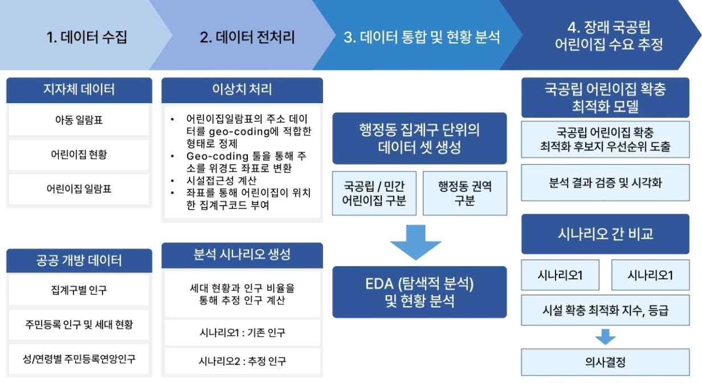
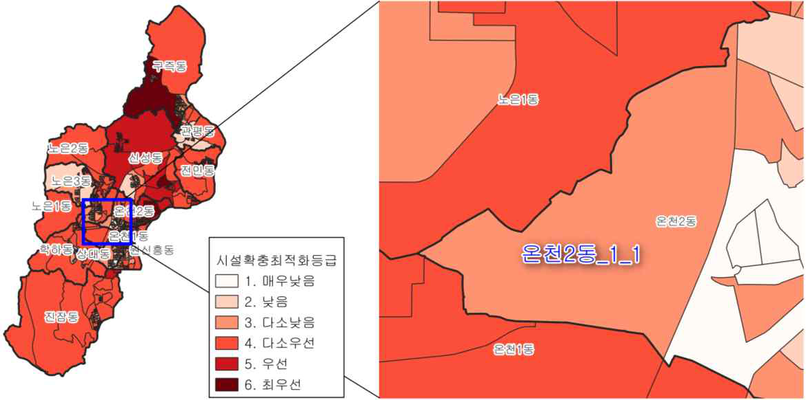
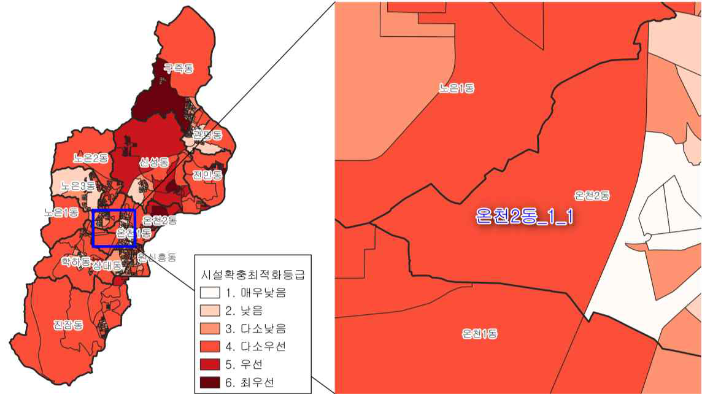
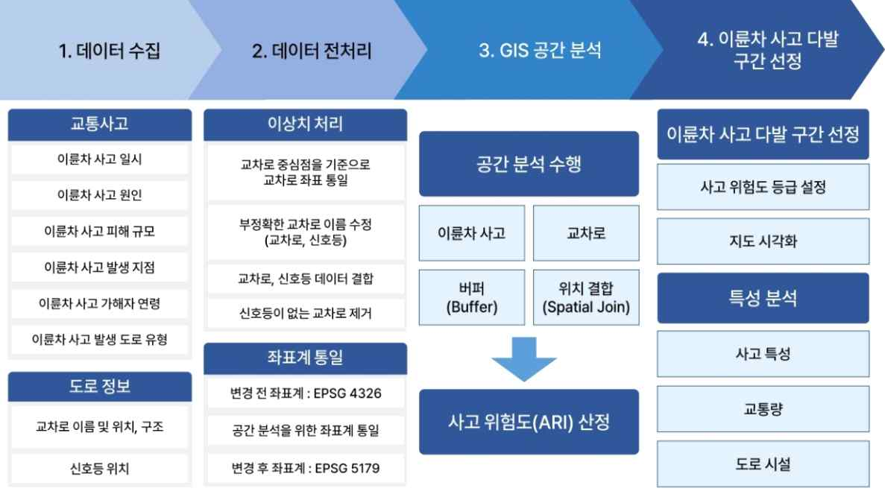
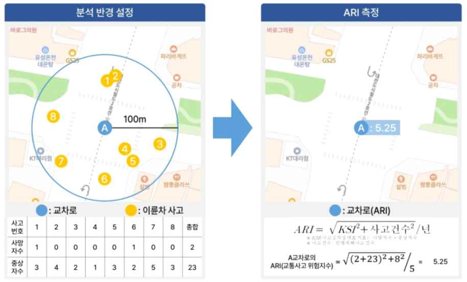
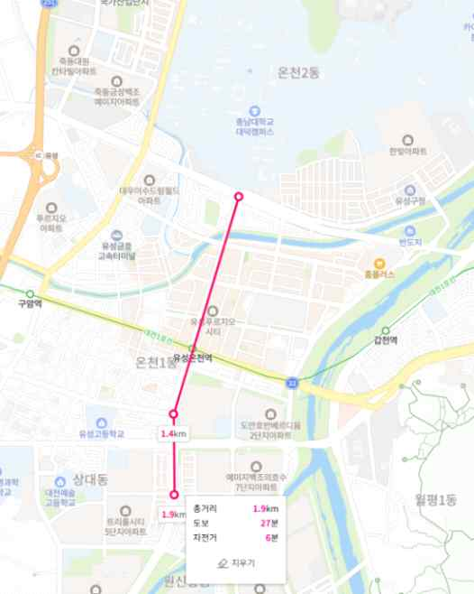

현황분석, 계획 검토, 타당성 검토
PROFILE
데이터로 계획의 근거를 만드는
도시계획 엔지니어
도시·지역계획 실무에서 기초조사, 현황분석, 수요추정을 데이터와 GIS로 수행해 왔습니다. 인구·주택·토지이용 자료를 지역 단위로 분석하고, 계획에 바로 쓸 수 있는 근거로 정리합니다.
수집, 정제, 분석, 시각화, 해석
지오프로세싱과 공간 데이터 해석
EDUCATION & ACHIEVEMENTS
학력·성과
EDUCATION
국립한밭대학교
도시공학과 · 졸업
- 학위 과정
- 학사
- 전공
- 도시공학
- 학점
- 3.6 / 4.5
KEY CERTIFICATIONS
4 SELECTED
핵심 자격
- 도시계획기사 도시계획
- 빅데이터분석기사 데이터 분석
- 컴퓨터활용능력 1급 OA
- Autodesk Certified User: AutoCAD CAD
EXPERIENCE
경력·연구
2025.10–현재
PROFESSIONAL
학술연구
(재)한국종합경제연구원 · 연구원 · 학술연구1팀
학술연구용역 경제성 분석: 노후전동차 경제성평가·노후 철도시설 개량투자 효과분석 연구용역 수행(NPV·B/C 산정, 민감도 분석, 관계법령 검토), 계획 용역 제안서 작성 참여
2025.04
PRESENTATION
도시 간 연구 협력 네트워크의 공간 구조 분석
대한국토·도시계획학회 2025 춘계학술대회
2015년·2023년 국가 R&D 사업 기반 도시 간 협력 네트워크 분석, 공동저자
2025.02–2025.09
INTERNSHIP
유성형 공공일자리(공공빅데이터 청년 인턴십)
유성구청
교통·돌봄 등 행정 데이터를 GIS·수요예측 모델로 분석 및 정책 제안
2024.06–2025.01
RESEARCH
상호관련성에 기반한 도시의 네트워크와 영향력에 관한 예측 연구
한국연구재단(과학기술정보통신부) · 학부연구생
웹·교통·항공 관계 데이터를 네트워크화하고 중심성을 계산해 도시 네트워크의 공간 구조 분석
2024.01–2025.01
RESEARCH
빅데이터 기반 인공지능 도시계획 기술 개발
국토교통과학기술진흥원 · 학부연구생
상주·유동인구 데이터 결합, 도시 규모별 지역 균형발전 점수 산출
SELECTED WORK
대표 프로젝트
01
초등 돌봄 수요예측 및 입지 분석
Demand Forecasting & Site Selection for After-school Care
행정동별 초등학생 수를 예측하고 100m 격자 단위로 돌봄센터 우선 입지를 뽑았습니다. 새로 들어서는 아파트 단지의 돌봄 수요까지 함께 추정했습니다.
방법·결과 자세히 보기
데이터 수집·정제
수요예측(코호트·Prophet)
가중점수 입지분석
신규단지 RF 추정
- 배경
-
- 돌봄 시설 배치를 위한 정량적 근거 필요
- 공공 빅데이터 표준분석모델 적용
- 데이터
-
- 행정기관코드
- 인구이동 통계
- 격자 단위 초등학생 수
- 초등학교·지역아동센터 등 시설 분포
- 신규 단지 정보
- 방법
-
- 코호트 요인법·Prophet 시계열로 초등학생 수 예측
- 아동 수·주거밀도·학교 접근성·유사시설 접근성 구간화, 격자별 입지 점수 산출
- 신규 단지는 사전 학습된 랜덤포레스트 회귀 모델로 초등학생 수 추정
- 반경 1km 내 우선 입지까지 거리 분석
- 표준분석모델의 지역 데이터 구축·적용, 결과 해석 담당
입지점수 = 아동수 + 주거밀도 + 학교접근성 − 유사돌봄시설 접근성
각 요소를 10/7/3등분으로 구간화한 뒤 FGI·AHP 기반 가중치를 반영해 격자별 종합점수를 산출
02
장대행복주택 국공립어린이집 수요 분석
Childcare Facility Demand Analysis for a New Public Housing Complex
신축 공공주택에 국공립 어린이집이 꼭 필요한지, 입주 전후 시나리오로 나눠 비교했습니다.
방법·결과 자세히 보기

- 배경
-
- 500세대 이상 공동주택은 어린이집을 국공립으로 운영해야 함 (「영유아보육법 시행령」 제19조의2)
- 국공립 수요 증가 대비 공급 부족
- 장대행복주택 입주 예정에 따른 설치 필요성 검토
- 데이터
-
- 지자체 제공 아동일람표·어린이집현황·어린이집일람표
- 공공데이터포털 집계구별 인구·주민등록 인구 통계
- 방법
-
- 행정안전부 보육 서비스 빅데이터 분석모델(2018) 적용
- 영유아·가임기 여성 인구 점수, 접근성 점수 산정 후 시설확충최적화지수 산출
- 지수 백분위 기준 6등급 구분
- 입주 전 / 입주 후 두 시나리오 비교
시설확충최적화지수 = 인구현황점수 × 0.6 + 접근성점수 × 0.4
인구현황점수 = 영유아 점수 + 가임기 여성 점수 · 접근성점수 = 이용자 접근성 점수
「보육 서비스 강화를 위한 빅데이터 분석」, 행정안전부, 2018 - 결과
-
시설확충최적화등급 — 입주 전(왼쪽) vs 입주 후(오른쪽) 

- 입주 전: 지수 28점(3.다소낮음 등급), 평균(36점) 대비 -8점, 상위 68.4%
- 입주 후: 지수 44점(4.다소우선 등급), 평균(37점) 대비 +7점, 상위 23.7%
- 영유아·가임기 여성 점수 각각 5점 만점 도달, 순위 상승폭 약 45%p
- 입주 시점에 맞춘 국공립 어린이집 확충 사전 검토 제안
03
평택시 농촌공간재구조화 수립용역 제안
Proposal for the Pyeongtaek Rural Spatial Restructuring Plan
제안서 준비 과정에서 시의회 안건과 부서 업무보고로 지역 현안의 흐름을 진단하고, 도시 확장 계획과 농촌공간이 충돌하는 지점을 정리했습니다.
방법·결과 자세히 보기
공개자료 수집
시기별 현안 정리
계획 간 충돌 지점 도출
제안 방향 반영
- 배경
-
- 농촌공간재구조화법 시행(2024)에 따른 농촌공간계획 수립 수요 증가
- 평택시 농촌공간재구조화 수립용역 제안 참여
- 제안서 고유 전략과 미공개 자료는 비공개, 공개자료 기반 진단 방법만 서술
- 데이터
-
- 평택시의회 안건 (2024~2025)
- 부서별 업무보고 (2024~2025)
- 2040 도시기본계획, 2030 도시관리계획 재정비 등 상위·관련 계획
- 지제역세권 공공주택지구 등 개발사업 현황
- 방법
-
- 시의회 안건·부서 업무보고를 시기별로 정리해 지역 현안 흐름 진단
- 도시 확장 계획과 농촌공간이 충돌하는 지점 정리
- 진단 결과를 제안 방향에 반영
04
이륜차 사고 위험구간 분석 및 대응 전략
Motorcycle Accident Hotspot Analysis & Response Strategy
교차로별 위험지수(ARI)로 이륜차 사고가 몰리는 구간을 찾고, 자치구 권한 안에서 실행 가능한 대응 전략을 정리했습니다.
방법·결과 자세히 보기

- 배경
-
- 배달 수요 증가에 따른 이륜차 사고 지속 발생
- 전면 번호판 부재로 현장 단속 곤란
- 자치구 차원의 직접 단속 권한 제한
- 데이터
-
- 경찰청 이륜차 사고 이력
- 지자체 교차로·신호등 위치
- 주요도로 교통량
- 방법
-
- 교차로 중심점 기준 좌표 통일
- 「도로교통법 시행규칙」 위험지수 산식 및 TAAS 분석 반경(100m) 적용, 교차로별 ARI 산정
- ARI 상위 2.5% 교차로를 고위험 구간으로 분류
- 요일·시간대·연령·도로유형별 특성 비교, 대응 전략 구분
ARI 측정 방식 (예시, 가상 데이터) 
ARI = √(KSI² + 사고건수²) / 년
KSI(사고심각성 대표지표) = 사망자수 + 중상자수 · 사고건수 = 인명피해사고건수
「도로교통법 시행규칙」 제8조의2·[별표6의2] - 결과
-
이륜차 사고 다발 구간 시각화 
- 유성온천역 인근 1.9km 구간 도출 (교차로 비중 1.67% 대비 사고 비중 14.33%, 밀도 44.2건/km)
- 요일: 목요일·일요일 집중 / 시간대: 정오 전후·야간 집중
- 연령: 20대 초반·40대 후반 비중 높음
- 법규 위반 유형: 신호위반 > 안전운전 불이행
- 대응 전략: 자치구 단독(맞춤형 안전 홍보, 시민참여 리빙랩) / 유관기관 협력(무인단속장비 설치 우선순위 제안, 위반 유형·시간대 기반 단속 방안 제시)
05
철도 인프라 경제성·투자효과 분석
Economic Feasibility Analysis of Rail Infrastructure
노후전동차 경제성평가와 노후 철도시설 개량투자 효과분석 연구용역에서 대안별 NPV·B/C 산정과 민감도 분석, 발주처 자료요청, 관계법령 검토를 맡았습니다.
방법·결과 자세히 보기
노후화·성능평가 체계 비교
잔존수명·수리한계비용 산정
NPV·B/C·LCC 대안 비교
할인율 민감도 분석
- 배경
-
- 5~8호선 노후전동차 경제성평가 연구용역 참여 (착수보고부터 최종보고까지 수행)
- 노후 철도시설 개량투자 효과분석 연구용역 참여 (진행 중)
- 데이터
-
- 선행 3개년 노후화·성능평가 보고서
- 2015년 노후전동차 보고서 (관계법령 인용 부분)
- 발주처 제공 자료
- 방법
-
- 선행 3개년 보고서의 노후화 모델·성능평가 체계 변화 비교 검토
- 발주처 자료요청 목록 정리, 소관부서·회신기한 병기
- 정밀안전진단 잔존수명 → 대수선 범위 선정 → 경제적 수리한계비용 산정
- 대안별 NPV·B/C·LCC 직접 산정·비교, 실질할인율을 바꿔가며 민감도 분석
- 생애주기비용(LCC) 모델 구조 분석 및 호선별 재구성
- 착수보고 자료 작성, 보고서 작성·수정
- 관계법령 검토: 2015년 보고서에 인용된 철도안전법·관련 고시를 현행 기준으로 갱신, 개정으로 바뀐 별표 조항 번호 정정
06
지방소멸 영향 요인 분석: 다중회귀와 머신러닝 비교
Factors Affecting Regional Extinction: Regression vs. Machine Learning
전국 229개 시군구의 2022년 자료로 소멸위험지수에 영향을 주는 요인을 다중회귀·단계적 회귀·머신러닝으로 비교 분석했습니다.
방법·결과 자세히 보기
문헌 고찰·변수 선정
데이터 구축·전처리
회귀·머신러닝 모델 구축
모델 평가·비교
- 배경
-
- 인구감소·저출산·고령화와 수도권 집중으로 지방소멸 위험 증가 (2022년 합계출산율 약 0.78명)
- 기존 연구의 주거·고용 변수에 교육 인프라와 외국인 인구 변수를 더해 분석 범위 확장
- 변수가 많을 때 생기는 다중공선성을 머신러닝으로 보완, 전통적 회귀분석과 결과 비교
- 데이터
-
- 전국 시군구 229개, 2022년 자료
- KDI 경제정보센터 지역발전지수(2022)를 참고해 독립변수 37개 구축 (주거·인구, 경제활동·고용, 의료·안전서비스, 인프라·환경, 사회·여가서비스, 교육·학습환경)
소멸위험지수 = 20~39세 여성인구 / 65세 이상 인구
종속변수 · 일본 마스다 보고서에서 처음 제안된 지표
- 방법
-
- 결측치(평균값 대체)·이상치 처리, 데이터 스케일링
- 다중회귀분석: 상관분석과 다중공선성(VIF) 검증으로 37개 변수를 8개로 축소 (R² 0.849)
- 단계적 회귀분석: 전진선택법과 후진제거법을 결합해 12단계로 변수 선택 (R² 0.909)
- 머신러닝: GBC·Random Forest·XGBoost를 RandomizedSearchCV로 최적화, Stratified K-Fold로 검증
- Hard·Soft Voting 앙상블을 비교해 Soft Voting을 최종 모델로 선정 (F1 weighted 0.892)
- 결과
-
- 세 방법 모두에서 주거·인구, 경제활동·고용, 교육·학습환경 변수가 유의한 영향
- 빈집 비율·노후주택 비율이 높을수록 소멸 위험 증가, 유치원 취원율·경제활동참가율이 높을수록 소멸 위험 감소
- 독거노인가구 비율이 높을수록 소멸 위험 증가 (단계적 회귀)
- 머신러닝 변수 중요도: 1인가구 비율, 유치원 취원율, 1인당 녹지면적 순
- 시사점: 주거환경 관리, 교육 인프라 확충, 고용 기회 확대, 노인 사회적 고립 해소, 지역 맞춤형 전략
07
도시 간 관계 네트워크 구축 및 중심성 분석
Inter-city Relational Network & Centrality Analysis
시군구 간 관계를 웹·교통·항공 데이터로 네트워크화했습니다. 중심성을 계산해 도시 네트워크가 공간적으로 어떻게 짜이는지 살펴봤습니다.
방법·결과 자세히 보기
관계 데이터 구축
중심성 계산
공간 시각화
- 배경
-
- 한국연구재단 과제 「상호관련성에 기반한 도시의 네트워크와 영향력에 관한 예측 연구」 참여
- 도시 간 상호작용 정량화를 위한 관계 데이터 직접 구축
- 과제 결과는 비공개, 데이터 구축 방법과 공개된 학회 발표 범위만 서술
- 데이터
-
- 국가 도메인(.kr) 웹사이트 간 하이퍼링크 연결관계 (직접 크롤링 구축)
- 철도 이동·교통량 등 교통 관계
- 국내 항공편 연결관계
- 방법
-
- 시군구 단위 관계 데이터 구축
- Python 기반 네트워크 중심성 계산
- QGIS·geopandas 기반 공간 시각화
- 2025년 학회 발표에서 2015년·2023년 국가 R&D 사업 기반 도시 간 연구 협력 관계로 분석 확장, 공동저자 발표
08
빅데이터 기반 인공지능 도시계획 기술 개발
AI-based Urban Planning Technology Development with Big Data
와이파이·CCTV 등 정보통신 지표를 직접 설계하고, 상주·유동인구 데이터와 결합해 대표 도시별 지역균형발전 점수를 산출했습니다.
방법·결과 자세히 보기
지표 정의·설계
상주·유동인구 데이터 결합
지역균형발전 점수 산출
- 배경
-
- 국토교통과학기술진흥원 지원 과제 「빅데이터 기반 인공지능 도시계획 기술 개발」 참여
- 와이파이·CCTV·LTE·5G 등 정보통신 데이터 기반 도시계획 지표 도출
- 과제 결과는 비공개, 본인 역할 범위만 서술
- 데이터
-
- 정보통신 데이터: 전자정부이용률, 정보공개 및 이용률, CCTV 커버율, 도시데이터센서활용률, 인터넷 커버리지율(5G·LTE 등), 공공와이파이 커버리지
- 상주인구·유동인구 데이터
- 방법
-
- 정보통신 분야 지표(공공와이파이 서비스율, CCTV 커버율, 인터넷 커버리지율 등) 정의 및 GIS·Python 기반 산출 방법 설계
- 상주·유동인구 데이터 결합
- 도시 규모별 대표 도시(대도시 부산, 중소도시 천안, 소도시 담양) 지역균형발전 점수 직접 산출
공공와이파이 서비스율(%) = 서비스 면적 내 활동인구 / 전체 활동인구 × 100
직접 설계한 정보통신 지표 중 하나(예시) · 전자정부이용률·CCTV 커버율·인터넷 커버리지율 등도 유사한 방식으로 산출
업무 도구·개인 프로젝트 — 과제와 무관하게 만든 것
나라장터 입찰공고 자동 수집
Python과 SQLite로 입찰공고를 수집·저장하고, 새 공고를 텔레그램으로 알려줍니다.
연도별 항공사진 수집
국토지리정보원 API로 특정 좌표의 연도별 항공사진을 모아 A4 PDF로 출력합니다.
평양냉면 맛집 인터랙티브 지도
전국 평양냉면 맛집을 표시한 웹 지도입니다. 휴대폰으로 봐도 깨지지 않게 만들었습니다.
지도 열어보기 ↗SKILLS
기술
Python · SQL · Excel · SPSS
데이터 수집·정제, 쿼리 작성, 집계, 결과표 구성
QGIS · PyQGIS · Web GIS
지오코딩, 버퍼·공간결합, 좌표계 변환, 밀집도 지도화
기술통계 · 상관·회귀분석
피어슨·스피어만·켄들 상관분석, 다중·단계적 회귀분석, 위험지수 임계값 산정
수요예측 · 머신러닝
코호트 요인법, Prophet, 랜덤포레스트·XGBoost, 앙상블 적용
경제성·투자효과 분석
NPV·B/C·LCC 대안 비교, 할인율 민감도 분석
AutoCAD
Autodesk Certified User 취득, 기초 도면 작성
Photoshop · GTQ 1급
그래픽기술자격 1급 취득, 이미지 편집
HWP · PowerPoint · Report
보고서 작성, 제안서 구성, 문서 스타일 자동화
통계·SQL·머신러닝·PyQGIS 학습 노트는 학습 노트 저장소 ↗ 에서 분야별로 확인할 수 있습니다.
CREDENTIALS
자격·교육
취득 자격증
기관·취득일빅데이터분석기사한국데이터산업진흥원
도시계획기사한국산업인력공단
Autodesk Certified User: AutoCAD®Certiport
컴퓨터활용능력 1급대한상공회의소
2종보통한국도로교통공단
도로교통사고감정사한국도로교통공단
GTQ(그래픽기술자격) 1급한국생산성본부
교육·활동
기관·기간·교육시간ESG 지속가능경영 보고서 검증심사원 양성과정
지속가능경영보고서 검증전문가로 활용하기 위한 교육
오픈소스 GIS 서비스 개발자 입문 과정
오픈소스 GIS 서비스 개발 기초
오픈소스 GIS 기반 스프링부트 웹 개발 과정
Web GIS와 Spring Boot 기반 개발 학습
대전시 스마트도시계획 수립 리빙랩 시민참여단
대전시 도시 문제를 시민참여를 통해 해결방안 도출
AutoCAD활용 건축도면설계 자격과정
AutoCAD활용 건축도면설계 자격과정
2024년 도시재생대학
도시재생 지역역량강화 교육